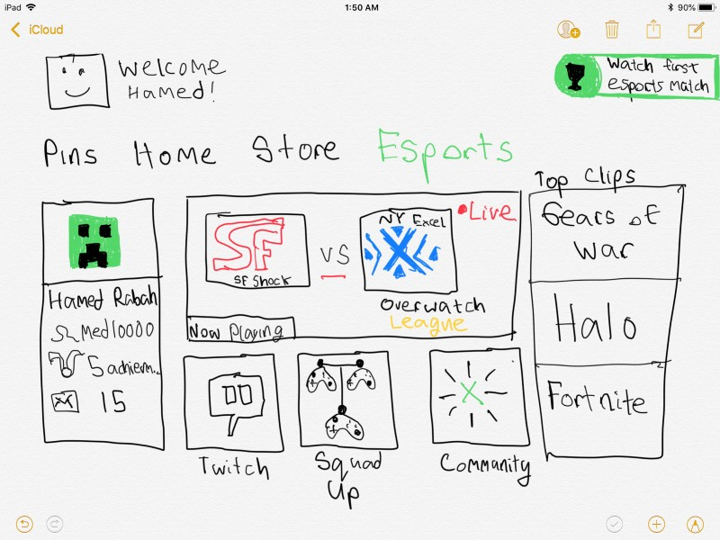
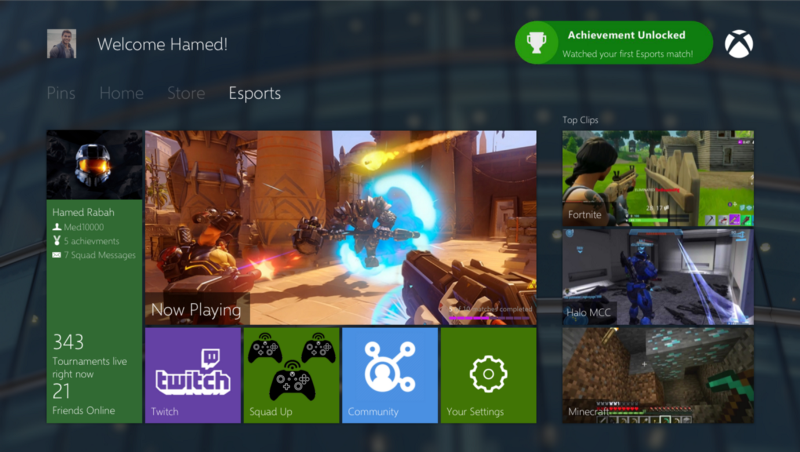

Microsoft Esports — Concept
*The following is a Product Specification (and) passion project I created in my free time. It is in no way affiliated with Microsoft.
Background
Trend 1: The esports market is expected to be worth USD 926.3 million in 2018 and is expected to reach USD 2.1 billion by 2023, at a compound annual growth rate of 18.61% between 2018 and 2023. Media rights (subscription and online advertisement), tickets and merchandise, sponsorship and direct advertisement, and publisher fees are the major streams that contribute to the overall revenue generation of the esports market.
Trend 2: Simultaneously, games such as Minecraft, Rocket League, Ark: Survival Evolved and Fortnite, have been leading the debate to allow for cross-platform gaming. This allows for greater than ever community building, esports potential, and greater gaming experience overall thanks to increased network effects. On the developer side Epic’s Unreal engine has made it easier than ever before to code a game once, and deploy it on multiple platforms (saving the development team precious time and money). Developers are now empowered to focus on improving the base game, rather than fixing bug switches between the Xbox and Playstation version of a game — let alone a mobile version.
Trend 3: Cloud gaming is finally becoming a viable option and is estimated to be a USD $4.284 billion by 2023. At the time of OnLive, it was an ambitious idea, but required an internet connection not widely accessible to most consumers. Today, ISPs are capable of much greater speeds, thanks to consumer’s increasing bandwith demands (Netflix, multiplayer games, etc.). Today services such as NVIDIA GeForce Now, Playstation Now, and Liquid Sky prove the viability of such products. NVIDIA in particular, proves how effective economies of scale can be from a company with existing cloud capabilities. Microsoft, with its expertise of both gaming (Xbox) and cloud (Azure) is in a unique position to become a market leader.
Problems
While these three trends have often been analyzed by current game providers in isolation, these are not isolated trends, but rather interconnected ones. Interconnected trends, demand an interconnected solution. Thats why I am excited to announce the concept for the Microsoft Esports hub.
Switching between Xbox and PC gaming has never been as seamless of a process as it should be. Oftentimes gamers are required to purchase the same game twice, play with different online communities, and use different gaming inputs (mouse/keyboard or joystick). Microsoft recently took a step towards addressing this problem with a mouse and keyboard designed for Xbox in collaboration with Razer. Further, thanks to cloud gaming’s advance developers can now speed up the process of making universal games compatible with both PC and Xbox environments. Yet, while these two worlds of gamers are slowly converging, one notable player is being left out. Esports. A $2.1 billion player.
Currently the Esports community on Xbox is mostly player driven, rather than Microsoft driven. The Xbox and PC Esports communities are also fragmented (which is also due to the current lack of cross platform games — which is rapidly changing). The solution I am proposing is a hub on both PC and Xbox for all things Esports — streaming tournaments, building a team, viewing live rankings, and engaging with the community (showing off favorite clips, making tournament predictions, tips, etc.).
Concept Mocks
Initial wireframe for my idea
Followed by a Sketch mockup
Goals
Bride the gap between the PC and Xbox gaming community, by having a forum accessible on all systems. On this community app, players would discuss matches, strategies, favorite teams/players, post gameplay clips, etc. It would also be an opportunity for Microsoft to partner with Esports teams/players to host AMAs, exclusive gameplay (perhaps team practices only accessible through Microsoft — rather than Twitch, Facebook, Youtube).
The second way to bridge the community is through the creation of a team building app. This app would allow both PC/Xbox gamers to form teams built around games, and their preferred roles (ex: damage, defense, support). Gamers could click profiles and see their content on the aforementioned community hub, gameplay clips, and stats. Think of it as LinkedIn meets Xbox Live.
Increase excitement around Esports tournaments by hosting exclusive Microsoft Tournaments. While Microsoft Esports would offer streaming for all tournaments (third party), it is also a great opportunity to create excitement around Microsoft products. For this reason Microsoft should take a play out of Blizzard’s playbook and sanction country-wide teams. Halo, one of Xbox’s most beloved gaming franchises, should have a USA team, a China team (most of the money in Esports is in the Asia market), a Korea team, and Russia team, all fighting it out for prize money, glory, and just good old fun! Microsoft Tournaments are an opportunity for Microsoft to renew excitement for their old first party IPs, as well as create an active community from the start for their new launches.
Use Cases
Meet Cortana:
Cortana is an avid gamer. She is a very social person and likes the community aspect of games that let her play with her friends. She likes to join her squad when she plays multiplayer games such as Overwatch, Fortnite, and Minecraft. When she is not playing these games she enjoy streaming tournaments and random clips of awesome gameplay.
Currently she uses her Xbox’s Youtube and Twitch apps to watch gameplay streams. Although she enjoys watching her favorite eSports players on Twitch, she finds it annoying to have to constantly switch between Youtube, Twitch, and Microsoft communities and forums.
After seeing an epic tournament comeback in the last minute, Cortana wants to group up with friends, but they are all busy at the time. She wants to find a new squad to play competitive games with, but currently has no systematic way to do that, except for games which offer such functionality built in.
After Microsoft Esports
Cortana is watching her favorite Halo stream on Microsoft’s built in streaming app. She is in the integrated messenger with her friends, chatting about the awesome last minute comeback by San Francisco Shock. After the game finishes Cortana asks her friends if they want to play competitive Halo 3 in the Master Chief Collection. Her friends have to leave, no problem says Cortana.
Without missing a beat, she opens her “Squad Up” app. Her profile is already complete — Cortana likes to play first person shooters, in the support role, and is looking for team players. She finds John-117 and Arbiter — whose profiles all compliment each other. Together, they queue up and start playing.
Hypothesis
Xbox Live has ~60 million monthly active users. Assuming 50% are playing multiplayer games, that means 30 million monthly multiplayer users. If 1 in 10 of these users watches eSports, that means 3 million Xbox users are potential eSports fans (with a CAGR of 18%), this means 4.9 million users in a by 2021. Esports fans are estimated to produce $6.6/fan by 2021. This means Microsoft has an untapped potential $32 million.
Rough Scoping, Costing, Timeline
This is an ambitious project, with an ambitious timeline, but the short-term goals of this program are immediately actionable.
Roll Out:
Year 1: Create the Esports hub with initial applications for streaming, community forums, and team building.
Platforms: Windows, Xbox
Location-North America
Year 2: Internationalization/Localization — Focus on building the product for the Southeast Asian market. This includes hosting tournaments, financing teams, localizing the market. Start work on a mobile companion app for the community aspect of Microsoft Esports.
Platforms: Windows, Xbox, Mobile
Year 3: Continue internationalization process, this time coinciding new tournaments with new launches (such as Halo, Gears of War, etc.). Launch mobile companion app, and begin work on mobile games to tap the same market.
Platforms: Windows, Xbox, Mobile
Year 4+: Streaming is now commonplace. Xbox as a service, rather than Xbox as a platform. Rather than just streaming to watch games, introduce features for players to stream to play games. Borrow heavily from the Azure team.
Platforms: Universal
Key Trade Offs & Decisions
Tradeoffs: investing in streaming infrastructure rather than integrating existing third parties.
Cross-platform gaming/streaming inevitably means helping the competition, the question is if the income effect is greater than the substitution effect (if promoting eSports and cross-platform gaming creates a bigger pie for everyone or if it reduces the size of the slice).
Not starting a role out in year 1 with the Southeast Asian market can leave the market ripe for the taking. On the other hand entering in a sloppy way can leave the market to rivals. The question is if the first mover advantage is worth the risks.
Investing in Xbox/PC gaming vs mobile gaming. Esports trends show both are rapidly growing, and mobile is an unexplored and under-tapped resource for Microsoft. Especially in light with their more recent collaborations with Android.